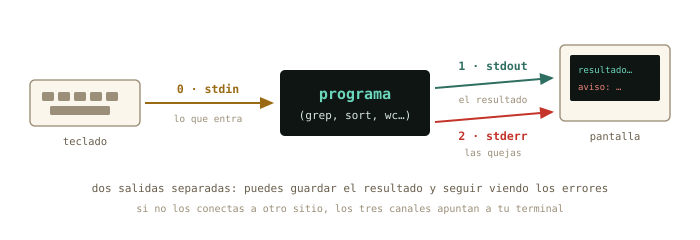
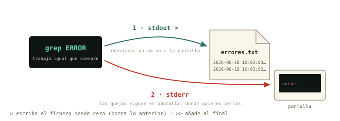
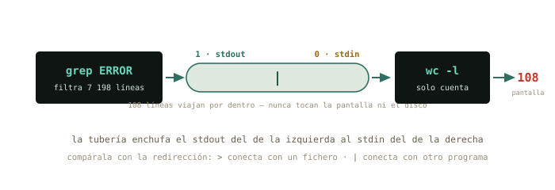
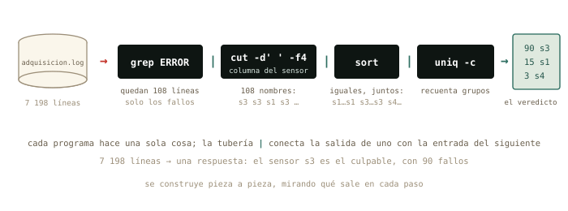

3 El flujo de datos
Esta noche tu experimento ha generado un registro de 7 198 líneas. Nadie va a leerlas. Hoy aprendes el gesto que define a Unix desde hace cincuenta años: conectar programas pequeños como conectas aparatos en un montaje experimental, hasta que de un fichero inabarcable sale una respuesta de tres líneas.
Al terminar esta sesión sabrás
- Qué son los tres canales de todo programa — stdin, stdout, stderr — y por qué esa separación es una idea brillante.
- Guardar la salida de cualquier comando en un fichero con
>y>>, sin perder los errores por el camino. - Encadenar programas con la tubería
|: la salida de uno como entrada del siguiente. - Usar la caja de herramientas del análisis:
wc,grep,sort,uniqycut. - Construir una tubería pieza a pieza, comprobando cada paso — el método que evita los errores silenciosos.
- Decidir con criterio cuándo resolver algo con tuberías y cuándo abrir Python.
3.1 Los tres chorros
Todo programa de terminal, sin excepción, nace conectado a tres canales. Por uno le entra texto: la entrada estándar (stdin). Por otro escupe sus resultados: la salida estándar (stdout). Y por el tercero protesta: la salida de errores (stderr). Si no dices lo contrario, los tres apuntan a tu terminal: stdin al teclado, y las dos salidas a la pantalla.

¿Por qué dos salidas? Piensa en el log de esta noche: si el programa de adquisición mezclara las medidas y los avisos de error en el mismo chorro, guardar los datos limpios sería un suplicio. Separados, puedes enviar cada uno a un sitio. Ese es exactamente el siguiente paso.
3.2 Redirigir: > y >>
El símbolo > desvía la salida estándar de la pantalla a un fichero. Descarga el registro de esta noche (está al final del capítulo, en la práctica) y prueba:
marcos@portatil:~/Descargas$ grep ERROR adquisicion.log > errores.txt
marcos@portatil:~/Descargas$ head -2 errores.txt
2026-08-18 10:03:00 ERROR s3 sin respuesta del sensor
2026-08-18 10:03:02 ERROR s3 sin respuesta del sensorgrep (lo conoces en un momento) no imprimió nada en pantalla: su stdout fue a parar a errores.txt. Dos reglas de seguridad:
>sobrescribe el fichero de destino sin preguntar. Su hermano>>añade al final sin destruir lo anterior.- Los errores (stderr) no viajan con
>: siguen saliendo por pantalla, que es donde quieres verlos. Para capturarlos también existe2>— el2es el número del canal de la figura.

> reconecta el stdout al fichero; el stderr ni se entera.
marcos@portatil:~/Descargas$ echo "Informe de la noche" > informe.txt
marcos@portatil:~/Descargas$ echo "generado el 19 de agosto" >> informe.txt
marcos@portatil:~/Descargas$ cat informe.txt
Informe de la noche
generado el 19 de agostoecho, que conociste el primer día como un juguete, acaba de revelar su oficio real: fabricar líneas de texto para tus ficheros.
3.3 La tubería: |
Y aquí está la idea central del capítulo. Si > conecta un programa con un fichero, la tubería | conecta un programa con otro programa: el stdout del de la izquierda se convierte en el stdin del de la derecha. Sin ficheros intermedios, sin pasos manuales.
marcos@portatil:~/Descargas$ grep ERROR adquisicion.log | wc -l
108Léelo como una cadena de montaje: grep filtra las líneas con ERROR, y su salida — en vez de inundar la pantalla — entra en wc -l (word count, opción lines), que solo cuenta. De 7 198 líneas a un número: esta noche hubo 108 fallos.

>), o a otro programa (|).
◷ Historia · Una manguera de jardín en Bell Labs
La tubería tiene padre: Doug McIlroy, jefe del departamento donde nació Unix. En 1964 — cinco años antes de Unix — ya escribía en un memorándum que los programas deberían acoplarse «como los tramos de una manguera de jardín: se enrosca otro segmento cuando hace falta tratar el agua de otra manera». Estuvo casi una década insistiendo, hasta que una noche de 1973 Ken Thompson cedió, la implementó en el kernel, y en una semana el equipo reescribió medio sistema en forma de filtros encadenables. De esa semana sale la filosofía Unix que estás usando ahora: haz que cada programa haga una sola cosa bien, y que todos hablen el mismo idioma — texto.
3.4 La caja de herramientas
Cinco filtros bastan para el noventa por ciento del trabajo. Todos leen texto por stdin (o de un fichero que les des) y escriben texto por stdout — por eso encajan entre sí en cualquier orden:
| Herramienta | Qué hace | La opción estrella |
|---|---|---|
wc |
cuenta | -l solo líneas |
grep PATRON |
deja pasar las líneas que contienen el patrón | -c cuenta en vez de mostrar; -v invierte: las que NO lo contienen |
sort |
ordena las líneas | -n numérico; -r al revés |
uniq |
colapsa líneas repetidas adyacentes | -c antepone cuántas veces |
cut |
recorta columnas | -d' ' separador, -f4 cuarto campo |
Y los que ya conoces, head y tail, también son filtros: al final de una tubería sirven para quedarte con lo primero o lo último.
△ Cuidado · uniq solo ve lo adyacente
uniq no busca repetidos por todo el fichero: colapsa líneas iguales consecutivas. Sueltas por ahí, se le escapan. Por eso el dúo inseparable es sort | uniq: primero juntas los iguales, luego colapsas. Si algún día un recuento te sale absurdo, revisa si te faltó el sort.
3.5 El análisis, pieza a pieza
Vamos a responder la pregunta que un físico se hace ante ese log: ¿qué sensor está fallando? Y vamos a hacerlo con el método profesional: construir la tubería paso a paso, mirando qué sale de cada pieza antes de añadir la siguiente.
Primer paso: aislar los errores y mirar unas cuantas líneas.
marcos@portatil:~/Descargas$ grep ERROR adquisicion.log | head -3
2026-08-18 10:03:00 ERROR s3 sin respuesta del sensor
2026-08-18 10:03:02 ERROR s3 sin respuesta del sensor
2026-08-18 10:03:04 ERROR s3 sin respuesta del sensorEl nombre del sensor es una columna. Contemos con los dedos sobre una línea: fecha (1), hora (2), nivel (3), sensor (4), mensaje (5 en adelante). Segundo paso: recortar esa columna… y comprobar.
marcos@portatil:~/Descargas$ grep ERROR adquisicion.log | cut -d' ' -f5 | head -3
sin
sin
sin¿«sin»? Hemos cortado el campo 5 — la primera palabra del mensaje — en vez del 4. Este tropiezo está puesto aquí a propósito, porque es el error más típico del capítulo y porque el método lo ha cazado al instante: cada pieza nueva se comprueba con un head antes de seguir. Corregimos y ahora sí:
marcos@portatil:~/Descargas$ grep ERROR adquisicion.log | cut -d' ' -f4 | head -3
s3
s3
s3Tercer paso: de 108 nombres de sensor al recuento. Los iguales juntos (sort), colapsados contando (uniq -c), y el ranking de mayor a menor (sort -nr):
marcos@portatil:~/Descargas$ grep ERROR adquisicion.log | cut -d' ' -f4 | sort | uniq -c | sort -nr
90 s3
15 s1
3 s4Veredicto en una línea: el sensor s3 es el culpable con 90 fallos (un conector flojo, apostaría un físico), s1 tuvo una racha corta de lecturas corruptas y s4 apenas tres tropiezos. Este es el momento del capítulo: acabas de interrogar a 7 198 líneas con una sola orden.

✚ Truco · La tubería perfecta no se memoriza: se pregunta
Que no te intimide la de cinco piezas: es el ejemplo más completo del curso a propósito, para que veas el mecanismo entero de una vez. Tu día a día serán tuberías de dos o tres — y si esta la has entendido, ya sabes cómo funcionan todas. Y una verdad incómoda de toda CLI: olvidar las herramientas y sus opciones es normal, hasta para los veteranos. Está permitido pedirle a una inteligencia artificial que te construya el comando («¿cómo cuento los ERROR por sensor en este log?») — con la disciplina del físico: lee el comando que te proponga pieza a pieza, verifica con man o --help lo que no reconozcas, y jamás ejecutes a ciegas nada que lleve sudo o rm. Tú ya sabes leer comandos: la IA propone, tú dispones. Este oficio lo afinaremos en un anexo del curso.
¿Y las temperaturas? El valor viene como temp_C=22.66: un = de separador y cut lo recorta igual de bien. Máxima de la noche:
marcos@portatil:~/Descargas$ grep INFO adquisicion.log | grep temp_C | cut -d'=' -f2 | sort -n | tail -1
25.0025.00 justos — sospechosamente redondo. Cruza el dato: grep -c WARN adquisicion.log da 357 avisos de «saturada» del sensor s2. El sensor no midió 25.00: se quedó clavado en su tope mientras la temperatura real seguía subiendo. Dos tuberías te acaban de dar el diagnóstico completo del montaje: s3 se desconecta, s2 está derivando hasta saturar.
◉ Por dentro · ¿Y aquel renombrado en lote?
En el capítulo 2 renombraste cinco runs a mano y prometimos algo mejor. La verdad completa: las tuberías transforman texto, no ejecutan una orden por cada fichero — para eso hacen falta los bucles del shell, que viven en el anexo de scripting. Pero ya tienes la mitad de la solución: find . -name "*.csv" te fabrica la lista sobre la que un bucle trabajaría. La tubería prepara el trabajo; el bucle lo remata. Todo llega.
3.6 ¿Y Python?
La pregunta honesta: tú sabes NumPy — ¿no era más fácil en Python? El mismo recuento, en Python legible:
recuento = {}
for linea in open("adquisicion.log"):
if " ERROR " in linea:
sensor = linea.split()[3]
recuento[sensor] = recuento.get(sensor, 0) + 1
for sensor, n in sorted(recuento.items(), key=lambda kv: -kv[1]):
print(n, sensor)Ocho líneas, mismo resultado (90 s3 · 15 s1 · 3 s4 — comprobado). Entonces, ¿cuándo cada cosa?
- Tubería cuando la pregunta es exploratoria y la respuesta cabe en pantalla: ¿cuántos?, ¿cuáles?, ¿quién más? Diez segundos, cero ficheros nuevos, y funciona idéntica en el superordenador al que te conectes por SSH — donde quizá no puedas instalar nada.
- Python cuando empieza el cálculo: estadística, ajustes, gráficas, o cualquier análisis que mañana querrás repetir con otros datos. Un script se documenta y se cita; una tubería se teclea y se olvida.
El flujo real de un físico computacional es la secuencia de ambos: explorar con tuberías hasta entender qué hay, y entonces escribir el script de Python que lo analiza en serio. Las dos herramientas no compiten: se turnan.
3.7 Práctica: la noche en el laboratorio
Arranca tu cuaderno (script sesion03.log) y descarga el registro de la noche: adquisicion.log (305 KB de texto — ni se te ocurra abrirlo con doble clic: para eso está la sesión de hoy). Trabaja en ~/Descargas o muévelo a tu carpeta de física del capítulo 2.
Ejercicio 3.1 · Dimensiones del problema
¿Cuántas líneas tiene el log? ¿Cuántas corresponden al sensor s2? Pista para lo segundo: el patrón de grep puede llevar espacios si lo proteges con comillas — y s2 con espacios alrededor evita confundirlo con cualquier otra cosa.
wc -l adquisicion.log → 7 198. Y grep -c " s2 " adquisicion.log → 1 799.
Por qué así — Las comillas protegen los espacios del patrón (son los mismos espacios-separadores del capítulo 1). Sin ellos, s2 también casaría en cualquier línea que contuviera esa pareja de caracteres en otro sitio. Acotar el patrón es la mitad del oficio de grep.
Ejercicio 3.2 · El primer síntoma
¿A qué hora exacta empezó a fallar el primer sensor, y cuál fue? Resuélvelo con una tubería que termine en head.
grep ERROR adquisicion.log | head -1 → 2026-08-18 10:03:00 ERROR s3 sin respuesta del sensor. El s3, a las 10:03:00 — tres minutos después de arrancar.
Por qué así — El log ya está en orden cronológico, así que «el primer error» es literalmente la primera línea que pase el filtro. Cuando el orden te lo dan hecho, aprovéchalo: ni sort ni nada.
Ejercicio 3.3 · ¿Quién avisa?
Los WARN son avisos, no fallos. ¿Qué sensores emitieron avisos esta noche? La respuesta debe ser la lista de nombres, sin repetir.
grep WARN adquisicion.log | cut -d' ' -f4 | sort | uniq → s2, solo. (Con uniq -c verás además que fueron 357 avisos.)
Por qué así — Misma maquinaria que el ranking del capítulo, sin el -c: cuando solo quieres saber quiénes, sort | uniq es la pregunta «¿qué valores distintos hay en esta columna?». Apréndetela como frase hecha: la usarás mil veces.
Ejercicio 3.4 · La reconstrucción
Sin mirar la sección del análisis: reconstruye de memoria la tubería del ranking de errores por sensor, pieza a pieza, comprobando cada paso con head. Compara tu resultado con el del capítulo.
grep ERROR adquisicion.log | cut -d' ' -f4 | sort | uniq -c | sort -nr → 90 s3 · 15 s1 · 3 s4.
Por qué así — Si te salió a la primera, perfecto. Si no, mejor aún: el objetivo era practicar el método — añadir una pieza, head, mirar, seguir. Una tubería no se escribe: se cultiva. El día que te salga una de seis etapas habrás llegado sin darte cuenta.
Ejercicio 3.5 · Rango de temperaturas
¿Entre qué mínima y máxima se movieron las lecturas válidas (las líneas INFO)? ¿Y por qué la máxima debe mirarse con lupa?
Mínima: grep INFO adquisicion.log | grep temp_C | cut -d'=' -f2 | sort -n | head -1 → 20.45. Máxima: la misma tubería con tail -1 → 25.00. Y 25.00 es justo el tope donde s2 satura (los 357 WARN): la «máxima» no es una medida, es el techo del instrumento.
Por qué así — sort -n ordena como números (sin -n, 9 iría después de 25, orden alfabético). Y la lección de física: un valor sospechosamente redondo en el extremo del rango huele a saturación, no a dato. La tubería te dio el número; el criterio lo pones tú.
Ejercicio 3.6 · El informe
Construye un fichero informe.txt con tres secciones usando solo echo y redirecciones: una línea de título, el total de errores, y el ranking por sensor. Las dos primeras con echo (una crea el fichero, la otra añade); la tercera, añadiendo la salida de tu tubería del 3.4.
echo "Informe de adquisicion - 18 de agosto" > informe.txt
grep -c ERROR adquisicion.log >> informe.txt
grep ERROR adquisicion.log | cut -d' ' -f4 | sort | uniq -c | sort -nr >> informe.txtComprueba con cat informe.txt: título, 108, y las tres líneas del ranking.
Por qué así — Primera línea con > (crea o vacía el fichero) y el resto con >> (añaden). Si hubieras usado > en todas, cada orden habría borrado la anterior y el informe tendría solo el ranking. Ese matiz — crear una vez, añadir después — es la gramática de todo informe generado por comandos. Cierra el cuaderno con exit y guarda sesion03.log.
3.8 Autocomprobación
Marca una respuesta por pregunta; la corrección es inmediata.
En grep ERROR log | wc -l, la tubería conecta…
grep.grep, y stderr va por su propio canal. Revisa la figura de los tres chorros.¿Por qué uniq -c casi siempre lleva un sort delante?
uniq solo ve líneas iguales consecutivas: el sort previo junta los iguales para que el recuento sea completo.Ejecutas dos veces echo hola > f.txt. ¿Qué contiene f.txt?
> sobrescribe cada vez: la segunda ejecución vació el fichero y volvió a escribir. Para acumular, >>.> sobrescribe sin preguntar — cada ejecución deja el fichero solo con su línea. El que añade es >>.¿Qué hace cut -d' ' -f4?
-d fija el separador y -f elige el campo. Y ya sabes qué pasa si cuentas mal los campos: se comprueba con un head.cut trocea cada línea por el separador de -d y entrega el campo que pide -f: aquí, el cuarto.Quieres guardar los resultados en un fichero pero seguir viendo los errores en pantalla. ¿Qué canal captura 2>?
> a un fichero y sin tocar el 2, consigues justo eso: datos guardados, quejas visibles.2> desvía las quejas. Vuelve a la figura de los tres chorros.¿Cuál es el equivalente exacto de grep ERROR log | wc -l?
grep -c cuenta las líneas que casan, ahorrándose la tubería. Muchos filtros tienen estos atajos — se descubren en su man.grep -c: cuenta en vez de mostrar. Mismo resultado, una pieza menos.Autocomprobación (test de la sección 3.8) — Respuestas: 1 a · 2 a · 3 b · 4 b · 5 a · 6 a.
La próxima sesión
Con el bloque A completo, ya hablas con la máquina. En el capítulo 4 empieza el bloque B: abrir el capó. El mapa completo del árbol — qué vive de verdad en /etc, /var, /usr —, quién es root, qué significa exactamente ese sudo que tecleas con fe, y el sistema de permisos rwx que llevas viendo en cada ls -l sin leerlo. Guarda sesion03.log: tres medidas ya en tu cuaderno.
cap. 3 v0.1 · piloto — anota tiempo real invertido, dudas y erratas junto a tu sesion03.log